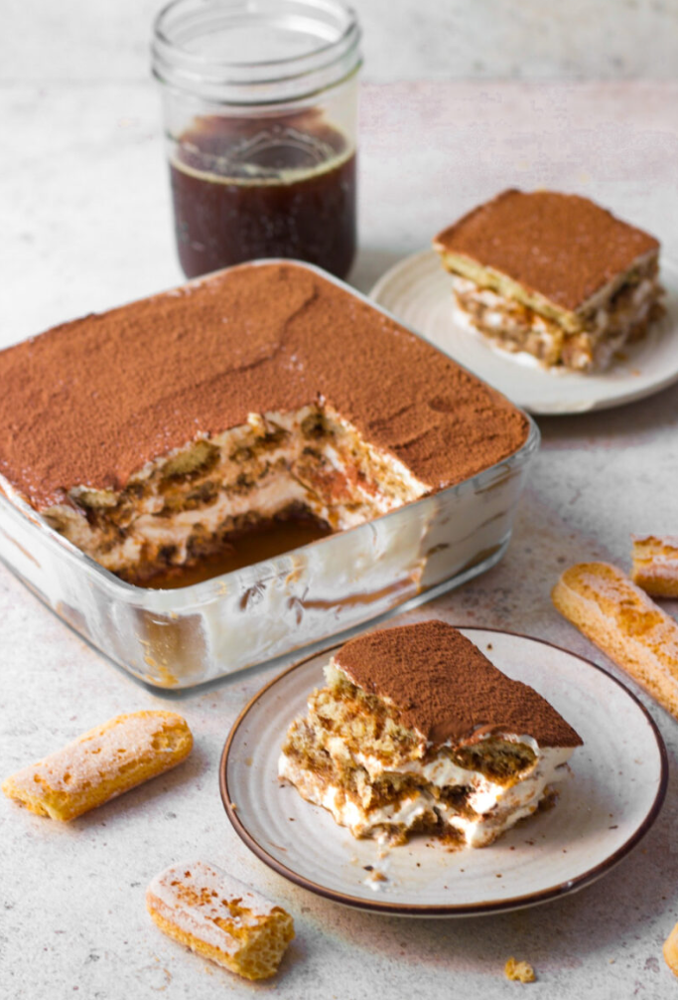
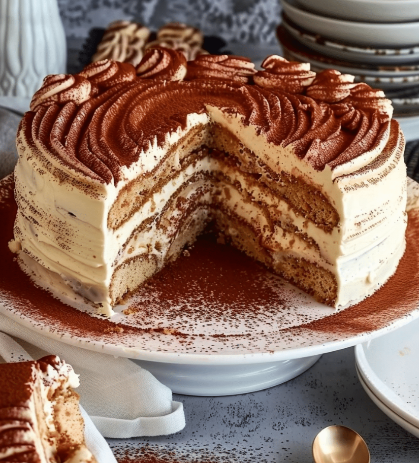
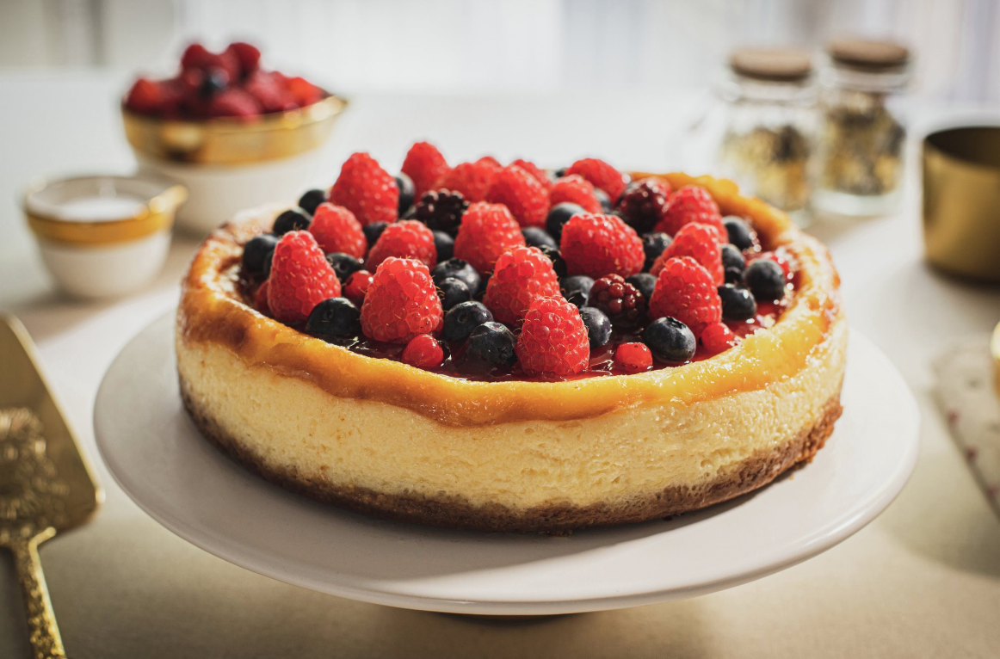

Baking and cooking have always been passions of mine. I started from a young age
and have found the kitchen to be my peaceful place, although it can get a little
chaotic sometimes!
Sweet Creations
Baking is one of my favorite things to do in the kitchen. I enjoy trying
different desserts, learning new techniques, and sharing what I make with
family and friends. Here are a few of my favorite sweet creations.
The Best Homemade Tres Leches Cake
If you are looking for a rich, moist, and easy dessert to share,
Tres Leches Cake is one of my favorites. It is made with a light cake
soaked in three different kinds of milk and topped with whipped cream
and fresh berries.
Why You'll Love This Recipe
Soft and moist texture
Made with simple ingredients
Perfect for birthdays, holidays, and family gatherings
Tastes even better after chilling overnight
Easy to decorate with fresh fruit
Ingredients
For the Cake
1 cup all-purpose flour
1 1/2 teaspoons baking powder
5 large eggs
1 cup granulated sugar
For the Milk Mixture
1 cup whole milk
1 can evaporated milk
1/2 can sweetened condensed milk
For the Topping
Whipped cream
Fresh strawberries
Fresh blueberries
Fresh raspberries
Instructions
Step 1: Prepare the Oven
Preheat the oven to 350°F. Grease and lightly flour a baking pan.
Step 2: Mix the Dry Ingredients
In a bowl, combine the flour and baking powder and set the mixture aside.
Step 3: Beat the Eggs and Sugar
Beat the eggs and sugar together until the mixture becomes light,
thick, and fluffy.
Step 4: Make the Batter
Slowly add the dry ingredients to the egg mixture and gently mix
everything together. Avoid overmixing the batter.
Step 5: Bake the Cake
Pour the batter into the prepared pan and bake for about 25 to 30
minutes, or until a toothpick inserted into the center comes out clean.
Step 6: Cool the Cake
Allow the cake to cool completely. Use a fork or toothpick to poke small holes
across the surface of the cake.
Step 7: Prepare the Milk Mixture
Mix the whole milk, evaporated milk, and sweetened condensed milk
together until well combined.
Step 8: Soak the Cake
Slowly pour the milk mixture over the cake so that it can soak through
the holes and spread evenly throughout the cake.
Step 9: Chill
Cover the cake and refrigerate it for at least four hours. For the best
texture and flavor, refrigerate it overnight.
Step 10: Add the Toppings
Before serving, spread whipped cream over the cake and decorate it with
fresh berries.
Tips for the Perfect Tres Leches Cake
Allow the cake to cool completely before adding the milk mixture.
Refrigerate it overnight for the best flavor and texture.
Use fresh berries to add color and balance the sweetness.
Avoid overmixing the batter so the cake stays light and soft.
Storage
Keep Tres Leches Cake covered in the refrigerator. It can be stored
for up to four days and should remain chilled because of the milk mixture.
Frequently Asked Questions
Can I make it ahead of time?
Yes. Tres Leches Cake is a great dessert to prepare ahead of time
because the cake becomes even more flavorful after chilling overnight.
Can I freeze Tres Leches Cake?
Yes, you can freeze the cake before adding the whipped cream. Thaw in the refrigerator overnight, then add whipped cream and other toppings before serving.
Tiramisu: Layers of Coffee, Cream, and Pure Bliss
Whether you prefer the traditional version made with coffee-soaked ladyfingers
or a richer variation made with soft sponge cake layers, this dessert delivers
the perfect balance of bold espresso flavor, velvety mascarpone cream, and a
delicate dusting of cocoa powder.
Why You'll Love This Recipe
Make it with traditional ladyfingers or sponge cake
Rich, creamy, and full of coffee flavor
No baking required when using ladyfingers
Perfect make-ahead dessert
Great for birthdays, holidays, and special occasions
Easy to customize with chocolate or berries
Ingredients
For the Tiramisu Base
Choose one:
Option 1: Traditional Tiramisu
Ladyfingers Version

Option 2: Tiramisu Cake
1 baked 8-inch sponge cake or vanilla cake

For the Mascarpone Filling
16 oz mascarpone cheese
1 cup heavy whipping cream
1/2 cup granulated sugar
1 teaspoon vanilla extract
For the Coffee Mixture
1 1/2 cups strong coffee or espresso, cooled
For the Topping
Unsweetened cocoa powder for dusting
Instructions
Step 1: Prepare the Coffee
Brew the coffee or espresso and allow it to cool completely.
Chilled coffee works best because it helps maintain the texture
of both the ladyfingers and cake layers.
Step 2: Make the Filling
In a large mixing bowl, beat the heavy whipping cream and sugar
until soft peaks form. Add the mascarpone cheese and vanilla extract,
then mix until smooth and creamy.
Step 3: Prepare Your Base
For Ladyfinger Tiramisu:
Briefly dip each ladyfinger into the cooled coffee. Arrange them
in a single layer in a baking dish.
For Tiramisu Cake:
Place one cake layer in the bottom of your serving dish. Brush
generously with the cooled coffee or espresso.
Step 4: Add the Mascarpone Layer
Spread half of the mascarpone mixture evenly over the first layer.
Step 5: Create Additional Layers
Ladyfinger Version:
Add a second layer of coffee-dipped ladyfingers.
Cake Version:
Place the second cake layer on top and brush it with additional coffee.
Step 6: Finish the Dessert
Spread the remaining mascarpone mixture over the top and smooth
it evenly with a spatula.
Step 7: Dust with Cocoa Powder
Generously dust the top with unsweetened cocoa powder.
Step 8: Chill
Cover and refrigerate for at least four hours, preferably overnight.
This allows the flavors to come together and creates the signature
creamy texture.
Step 9: Serve
Slice and serve chilled. You can garnish the top with chocolate
shavings, fresh berries, or an additional dusting of cocoa powder.
Tips for the Perfect Tiramisu
Use high-quality espresso for the best flavor.
Let the cake cool down before adding expresso.
Dip ladyfingers quickly to prevent a soggy dessert.
Chill overnight whenever possible for the richest taste.
Use full-fat mascarpone cheese for maximum creaminess.
Dust with cocoa powder just before serving for the freshest appearance.
Which Version Should You Choose?
Traditional Ladyfinger Tiramisu
Classic Italian-style dessert
Light and airy texture
No baking required
Perfect for quick preparation
Tiramisu Cake
Richer and more filling
Great for birthdays and celebrations
Easy to slice into neat layers
Beautiful presentation for special occasions
New York Cheesecake: Rich, Creamy, and Irresistible
Few desserts are as iconic as a classic New York Cheesecake. With its buttery
graham cracker crust and rich, velvety cream cheese filling, this dessert is a
crowd favorite for birthdays, holidays, and special occasions. Every bite is
smooth, creamy, and perfectly sweet, making it a recipe you'll come back to
again and again.

Why You'll Love This Recipe
Rich and creamy texture
Made with simple ingredients
Perfect for special occasions
Can be made ahead of time
Delicious on its own or topped with fruit, chocolate, or caramel
Ingredients
For the Crust
1 1/2 cups graham cracker crumbs
6 tablespoons melted butter
For the Filling
24 oz cream cheese, softened
1 cup granulated sugar
3 large eggs
1 cup sour cream
1 teaspoon vanilla extract
Instructions
Step 1: Prepare the Oven
Preheat the oven to 325°F. Grease a 9-inch springform pan.
Step 2: Make the Crust
In a mixing bowl, combine the graham cracker crumbs and melted butter
until evenly coated.
Step 3: Form the Crust
Press the crumb mixture firmly into the bottom of the prepared pan
and set it aside.
Step 4: Prepare the Filling
In a large bowl, beat the cream cheese and sugar until smooth and creamy.
Step 5: Add the Eggs
Add the eggs one at a time, mixing well after each addition.
Step 6: Finish the Batter
Mix in the sour cream and vanilla extract until the filling is smooth.
Step 7: Fill the Pan
Pour the cheesecake filling over the prepared crust and spread it evenly.
Step 8: Bake
Bake for 50 to 60 minutes, or until the edges are set and the center
is only slightly jiggly.
Step 9: Cool
Turn off the oven and allow the cheesecake to cool gradually. Once it
reaches room temperature, refrigerate it for at least four hours.
Step 10: Serve
Slice and serve chilled. Add fresh berries, chocolate drizzle, caramel
sauce, or whipped cream if desired.
Tips for the Perfect Cheesecake
Use room-temperature ingredients for a smoother batter.
Do not overmix after adding the eggs.
Allow the cheesecake to cool slowly to help prevent cracks.
Chill overnight for the best flavor and texture.
Use a sharp knife wiped clean between slices for neat servings.
Storage
Store the cheesecake covered in the refrigerator for up to five days.
For longer storage, wrap it tightly and freeze it for up to two months.
Frequently Asked Questions
Why did my cheesecake crack?
Cracks can happen if the cheesecake is overmixed, overbaked, or cooled
too quickly. Allowing it to cool gradually can help prevent cracking.
Can I make cheesecake ahead of time?
Yes. Cheesecake is a great make-ahead dessert because chilling it
overnight improves both the flavor and texture.
Can I freeze cheesecake?
Yes. Wrap individual slices or the entire cheesecake tightly and freeze
for up to two months. Thaw it overnight in the refrigerator before serving.
What toppings go well with cheesecake?
Fresh strawberries, blueberries, cherries, caramel sauce, chocolate
ganache, whipped cream, and fruit sauces all pair well with cheesecake.